初审批量可跨提现方式，复审批量必须同一方式。两类抽屉提交后均保持打开。详情与历史左右同时展示。
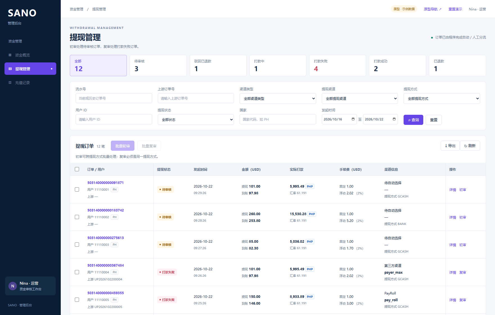
六种状态、现有查询维度、初审与复审独立入口
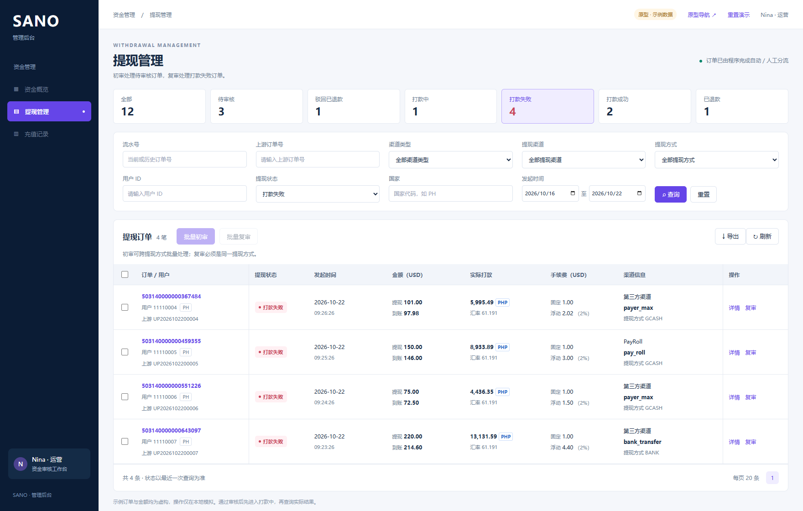
打款失败就是需要复审的订单，不增加待复审状态
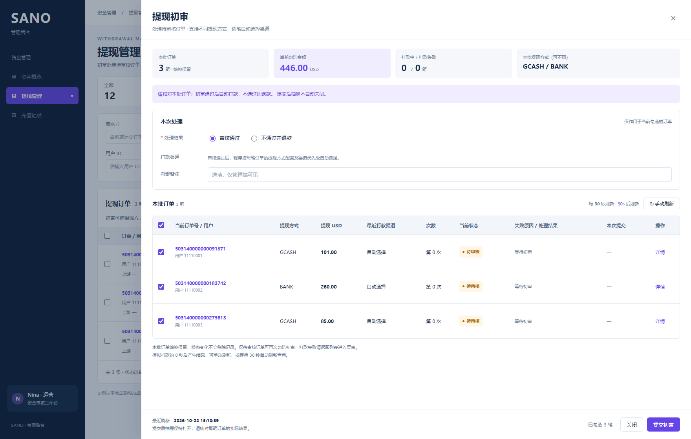
GCASH 与 BANK 可一起初审，逐笔按各自方式自动选渠道
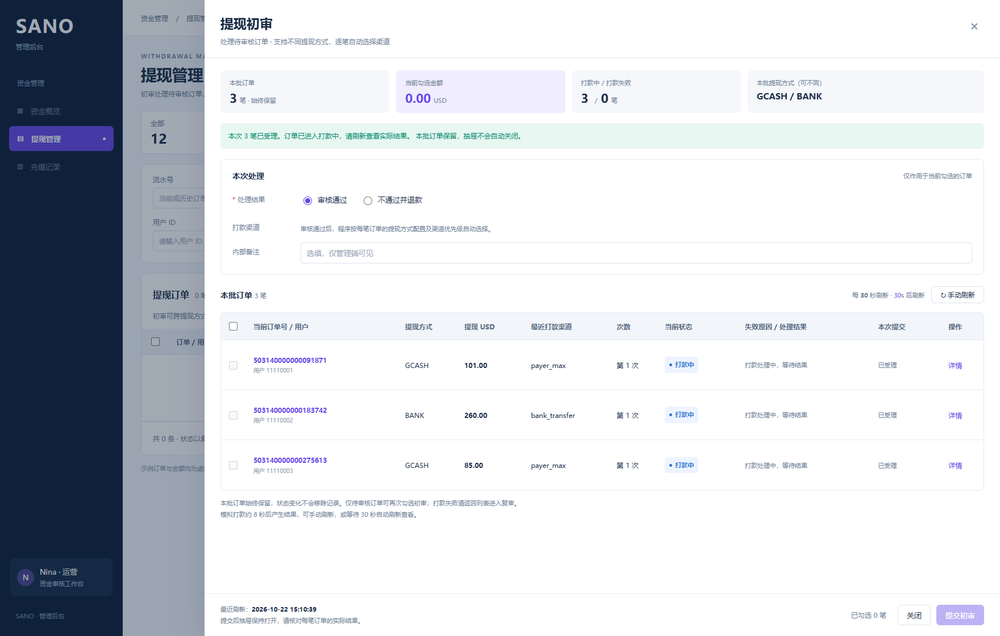
全部进入打款中，抽屉保持打开，支持自动及手动刷新
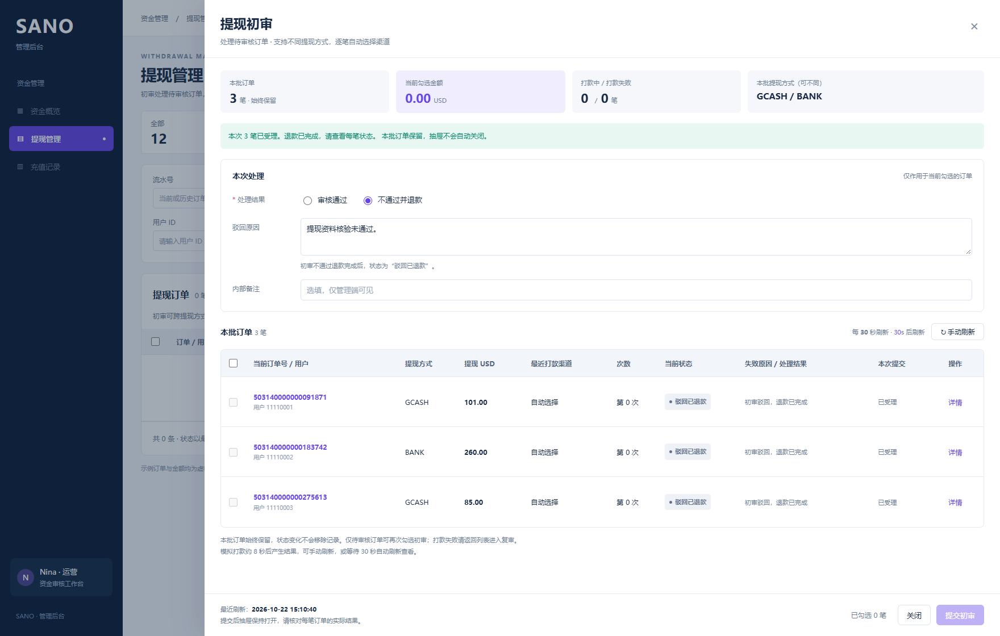
初审不通过退款完成，区别于复审的已退款
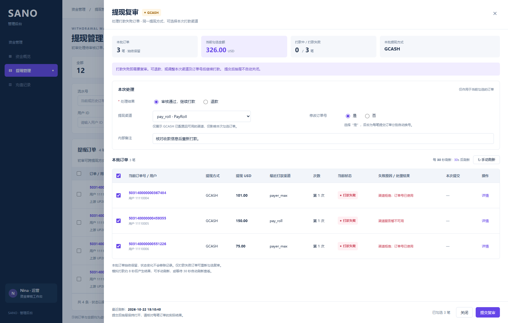
同一 GCASH，历史渠道可不同；只列已配置可用渠道
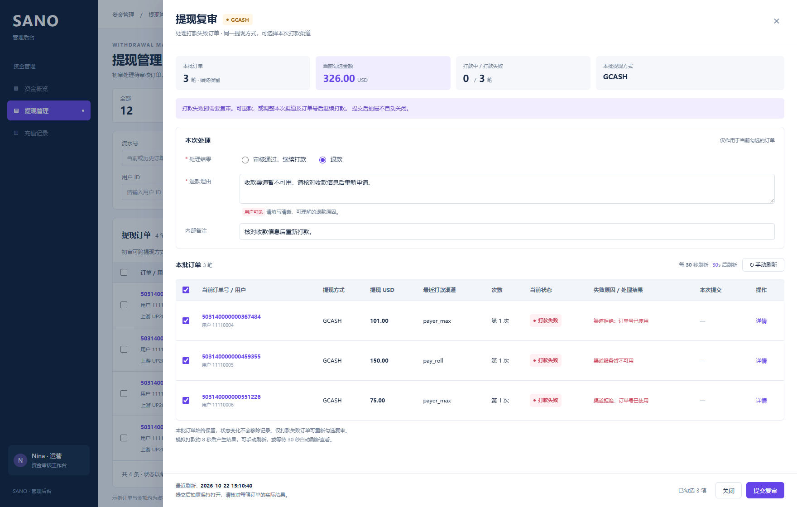
用户可见退款理由必填，与内部备注分别填写
每笔后台换号，订单保留；不能重复复审打款中的订单
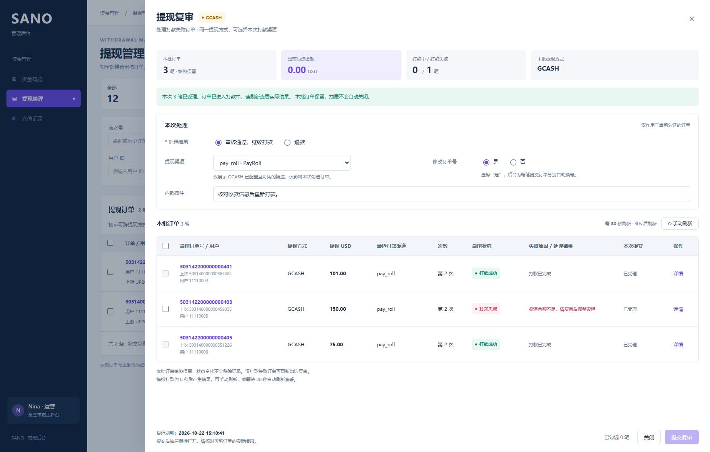
两笔成功一笔失败；只勾选失败订单可继续复审
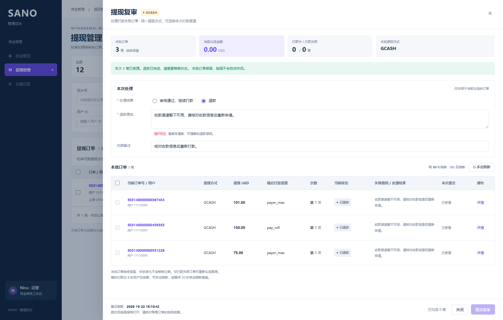
实际退款完成后显示已退款，抽屉不关闭
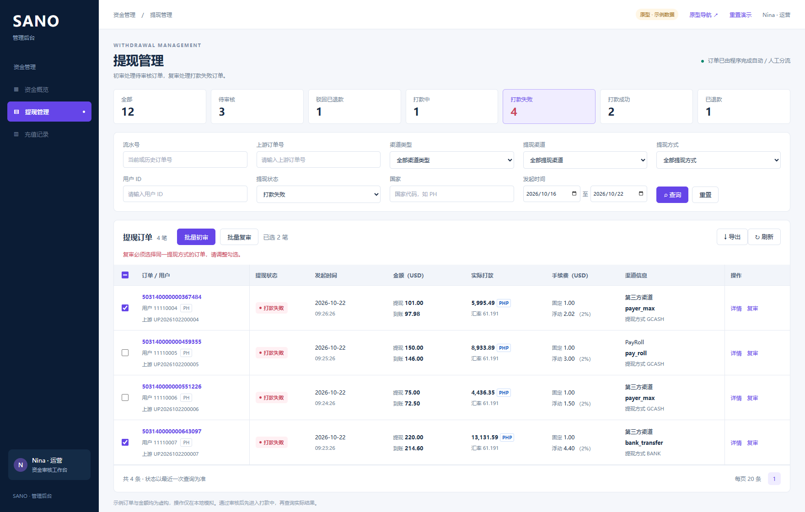
不同提现方式不可一起复审，提示调整勾选
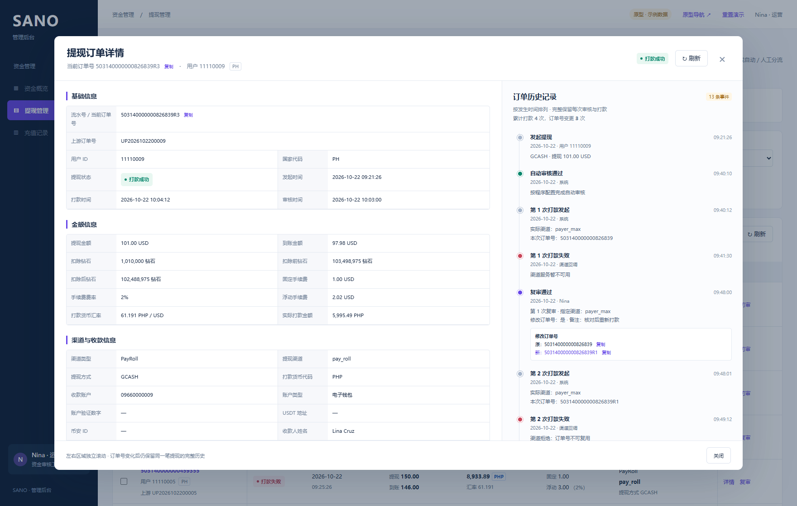
左侧当前详情，右侧从发起到多次打款的时间轴；无页签
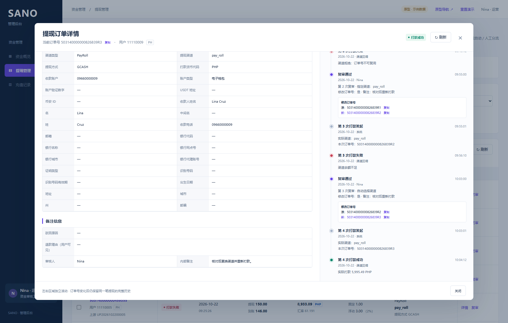
独立滚动到第三次复审换号及第四次打款成功
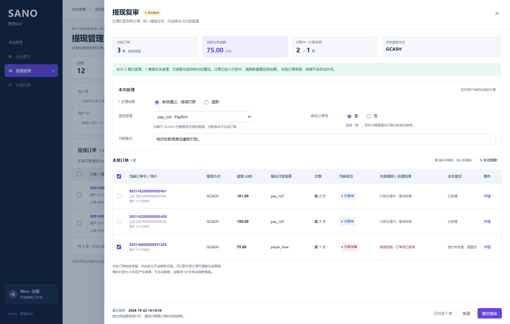
受理结果逐笔展示，未受理订单保留勾选，不能显示整批成功
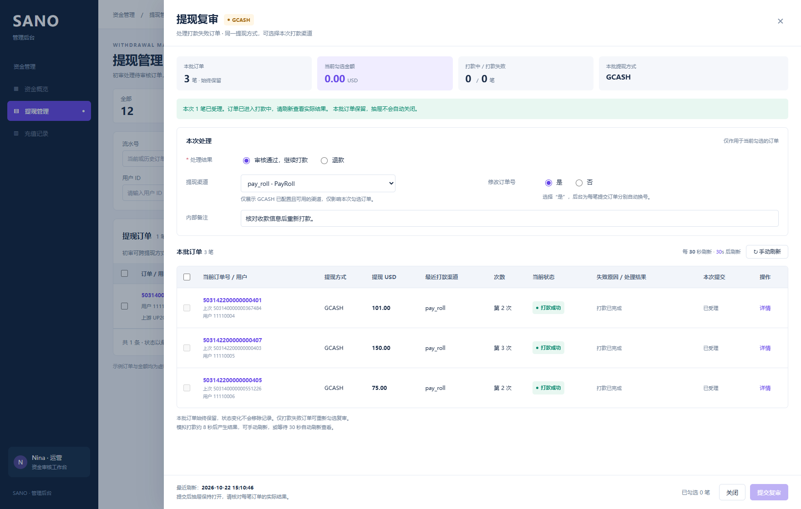
失败订单再次处理后成功，全部订单仍保留，手动关闭